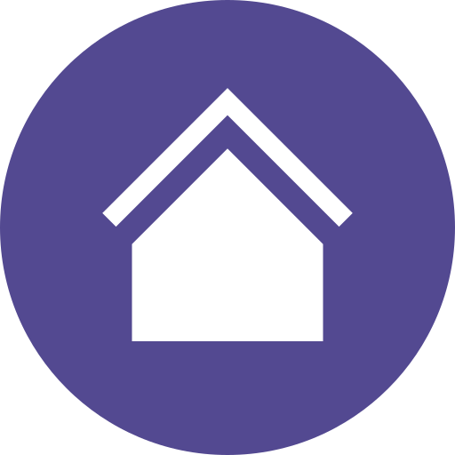

<div class="z-50 absolute w-100vw h-full pointer-events-none">
  <div class="w-full h-full relative">
    <div class="absolute top-0 left-0">
      
    </div>
    <div class="absolute top-0 right-0 p-30px">
      <div class="flex" *ngIf="notPreHome">
        <a class="pointer-events-auto pr-10px" routerLink="/">
          
        </a>
        <a class="pointer-events-auto" routerLink="/home">
          
        </a>
      </div>
    </div>
  </div>
</div>
